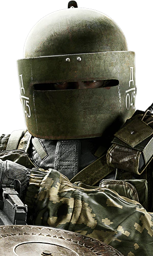
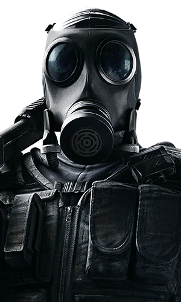
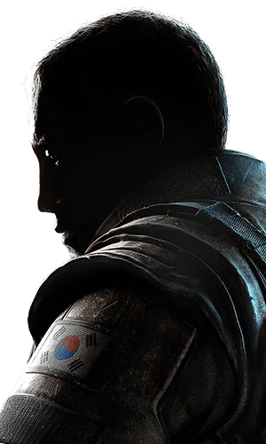
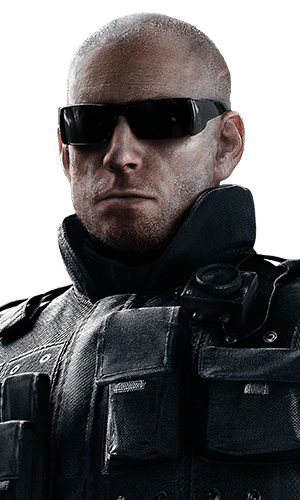
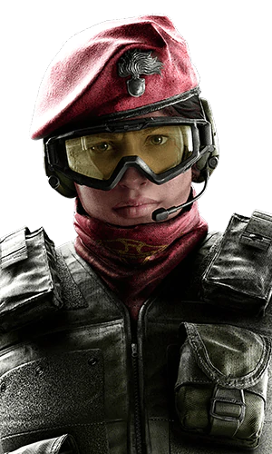

| Játékmenet | Kezdőlap | Támadók |
A Rainbow Six Siege-ben ugyebár az idő felében védőkkel leszel, így illik megismerni őket. A védők feladata hogy eliminálják a támadó csapat minden tagját, vagy hátráltassák őket míg lejár az idejük. Összeségében azt lehet elmondani róluk, gyengébb fegyvereik vannak a támadóknál, hozzáférésük van a pályán lévő megfigyelő kamerákhoz, be tudnak barikádozni ajtókat és ablakokat, ezzel lassítva a támadókat, valamint van 10 db úgynevezett reinforce-uk, amit felszerelhetnek soft falakra és hatch-ekre. Ezek kinyitására speciális felszerelésre van szűkség. De ezen kívül mindegyik különleges mind fegyverzetben, mind felszerelésben, valamint feladatban is.
Általában jobban páncélozott, de lassabb és nagy közelítésű célzóval rendelkezik. A dolga hogy bombák közelében maradjon, és úgy próbálja megállítani a támadást.Pl.:
| Tachanka | Smoke | Rook | Mira |
|---|---|---|---|
|  |  |
|
|
A roamer-ek az általában az általában gyorsabb egyben halkabb operátorok. Feladatuk hogy az bombától távolabb vegyék fel a harcot a támadókkal. Ne engedjék hogy bejussanak az épületbe, ha bejutottak ne tudjanak nyugodtan mozogni. Pl.:
| Vigil | Ela | Pulse | Alibi |
|---|---|---|---|
|  |

|
 |  |
Erre a két nagy csoportra lehet szétosztani a védőket, de ezeken kívül számos más védő van speciális feladatokra.